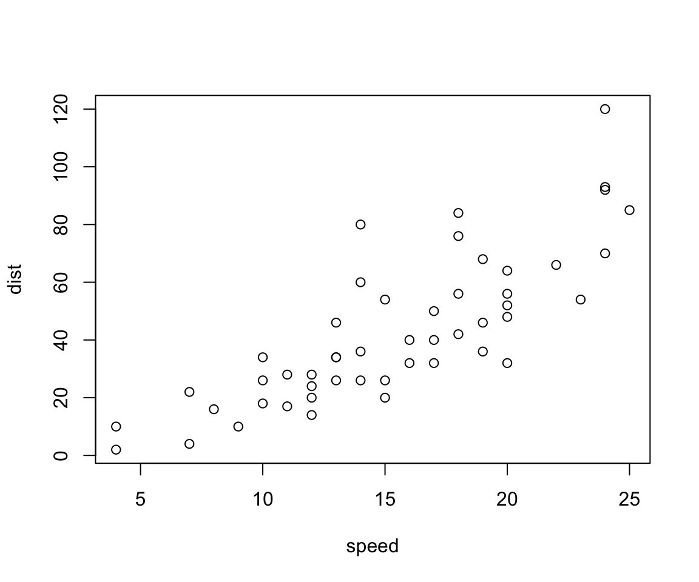
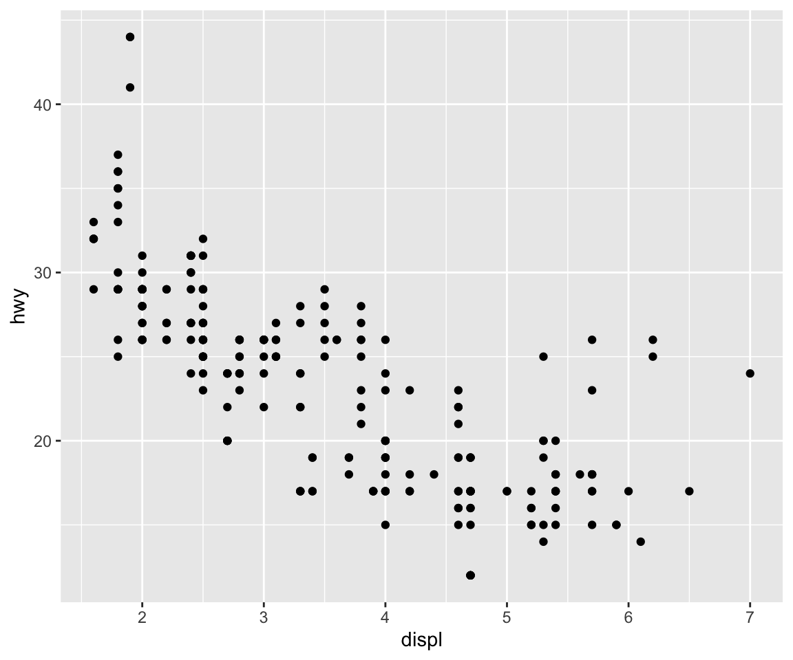

Data Science for Education with .red[R]
First class
Yangyong Ye
2020-11-21
Last updated: 2020-11-21
Checks: 7 0
Knit directory: teacher_status/analysis/
This reproducible R Markdown analysis was created with workflowr (version 1.6.2). The Checks tab describes the reproducibility checks that were applied when the results were created. The Past versions tab lists the development history.
Great! Since the R Markdown file has been committed to the Git repository, you know the exact version of the code that produced these results.
Great job! The global environment was empty. Objects defined in the global environment can affect the analysis in your R Markdown file in unknown ways. For reproduciblity it’s best to always run the code in an empty environment.
The command set.seed(20201029) was run prior to running the code in the R Markdown file. Setting a seed ensures that any results that rely on randomness, e.g. subsampling or permutations, are reproducible.
Great job! Recording the operating system, R version, and package versions is critical for reproducibility.
Nice! There were no cached chunks for this analysis, so you can be confident that you successfully produced the results during this run.
Great job! Using relative paths to the files within your workflowr project makes it easier to run your code on other machines.
Great! You are using Git for version control. Tracking code development and connecting the code version to the results is critical for reproducibility.
The results in this page were generated with repository version 03ca7f6. See the Past versions tab to see a history of the changes made to the R Markdown and HTML files.
Note that you need to be careful to ensure that all relevant files for the analysis have been committed to Git prior to generating the results (you can use wflow_publish or wflow_git_commit). workflowr only checks the R Markdown file, but you know if there are other scripts or data files that it depends on. Below is the status of the Git repository when the results were generated:
Ignored files:
Ignored: .Rproj.user/
Untracked files:
Untracked: ignite.R
Unstaged changes:
Modified: _workflowr.yml
Note that any generated files, e.g. HTML, png, CSS, etc., are not included in this status report because it is ok for generated content to have uncommitted changes.
These are the previous versions of the repository in which changes were made to the R Markdown (analysis/Overview.Rmd) and HTML (docs/Overview.html) files. If you’ve configured a remote Git repository (see ?wflow_git_remote), click on the hyperlinks in the table below to view the files as they were in that past version.
| File | Version | Author | Date | Message |
|---|---|---|---|---|
| html | 28a71f0 | yangyong ye | 2020-11-21 | Build site. |
| Rmd | 2fab393 | yangyong ye | 2020-11-21 | Add my first analysis |
为什么要学定量研究？
教育研究走向实证研究
政策研究必须以定量研究为前提
工作需要
| # 一个例子 |
| - 缺少编制？ |
| - 工资待遇低？ |
| - 高级职称指标少？ |
| - 工作任务繁重？ |
| - 新教师质量越来越差？ |
| ??? 可以请学生罗列他们认为教育领域存在哪些棘手的问题？ |
定量研究有哪些特点
量化
关注于关系
关注于总体
| # 如何学好定量研究？ |
| - 不要恐惧 |
| - 多看论文 |
| - 练习、练习、练习 |
定量研究步骤
- 确定主题
- 目标群体（测量单位）
- 相关变量
- 理论构架（提出假设）
- 收集数据
- 问卷调查
- 二手数据（官方数据、共享数据）
- 数据清理
- 模型建构
- 模型选择
- 变量选择
- 数据分析与展示
- 结果解读
- 启示建议
class: center, middle,inverse
Let’s begin ou.red[R] journey!
class: center, middle,inverse
Why R?
small
versatile
beautiful
not hard to learn
???
In this slide, I will talk about the advantages of R and why I change from spss to R.
| class: inverse, middle |
| # Course Overview - Environment Preparation |
| - Data fetching |
| - Data preparation |
| - Data tabulation |
| - Data visulization |
| - Data analysis |
| - Data creation |
class: center middle
Class Schedules
| class: inverse, middle |
| # Preparation |
| - Environment Preparation |
| - RStudio installation |
| - RStudio introduction |
| - R introduction |
| - Common package installation (eg. tidyverse) |
| - Self-learning material R for data science |
class: inverse, middle # Data Fetching - SOURCE
| class: inverse |
| # 熟悉调查数据的步骤 |
| - user guide |
| - questionnaire |
| - technical report |
| - codebook |
| - data |
class: inverse, middle # 官方教育统计数据
| class: inverse, middle # 练习 |
| 1. 小学（学校、学生（招生数、在校生、毕业生）、专任教师）（高诗琪） 2. 初中（学校、学生（招生数、在校生、毕业生）、专任教师）（耿雪） 3. 普通高中（学校、学生（招生数、在校生、毕业生）、专任教师）（栾艺雯） 4. 中专、职业高中、技工学校（学校、学生（招生数、在校生、毕业生）、专任教师）（高佳毅） 5. 高职高专（学校、学生（招生数、在校生、毕业生）、专任教师）（马海燕） 6. 普通高等学校（学校、学生（招生数、在校生、毕业生）、专任教师）（贺子容） 7. 中师（学校、学生（招生数、在校生、毕业生）、专任教师）（陶纯珺） 8. 师范院校（学校、学生（招生数、在校生、毕业生）、专任教师）（苗兴慧） |
class: middle,inverse # Data Preparation
Data Manipulation
recode/rename
subset(select/filter)
join/combine
arrange
summarize
count
reshape
| class: middle,inverse |
| # Data Tabulation |
| - Table Type |
| - frequency table |
| - cross-table |
| - summary table |
| - table formating* |
| - test-table(t, chi, anovo) |
| - regression table |
| .footnote[[*]this will use kableExtra package] |
class: inverse, middle
Data Visualiztion
-
Rankings: Barplot,circular barplot, Spider/Radar, parallel, lollipop/stem, circular barplot
Distribution: histgram, density, boxplot, violin, ridgeline/joyplot
Correlation: scatter, heatmap, correlogram, bubble, connected scatter, density 2D
Composition: treemap, dendrogram, venn diagram, stacked bar, pie chart, doughnut, circular packing
| class: inverse, middle |
| # Data Visualiztion |
| - Graph Type |
| - Evolution: line, Area, stacked area, streamgraph, parallel, time series |
| - Maps: background map, connection, choropleth, bubble, hexbin map, cartogram |
| - Flow: network, chord diagram, hierarchical edge bundling, sankey diagram |
| - Other: interactive, animation, 3d, color, cheat sheet. |
class: middle,inverse
Data Visualiztion
Useful packages
comprehensive package: ggplot2
for dendrogram: packcircles,ggraph, treemap, dendextend
for network: igraph,tidygraph,ggraph
correlation matrix: ellipse, car, GGally,corrgram
flow diagram: ggalluvial
class: middle,inverse # Data Analysis
Data analysis ladder
simple test(t, chi, anova)
correlation
factor analysis
cluster analysis
regresion
| class: middle,inverse |
| # Logistics - MATERIALS |
| - Garrett Grolemund, Hadley Wickhan. R for data science - Hadley Wickham, Ggplot2-Elegant-Graphics for Data Analysis(2nd), Springer. - 王孝玲,教育统计学,华东师范大学出版社. - Other(TBC) |
| - ACCESSMENT - Presence and class performance (10%) - Group survey project (20%) - Assignments (30%) - Individual project proposal (40%) |
class: middle,inverse, center
Project Example
学生惩戒
财政年报
建档立卡学生就学报告
高考成绩分析报告
??? 高考成绩分析三个项目：（1）语数外成绩分布的问题：为什么语文的变异小数学的变异大？为什么英语不呈现正太分布？为什么数学左边是锯齿状的？哪门学科更重要？ （2）不同群体的对比问题，男女、城乡、应往届、文理科 （3）入学年龄对成绩的影响
Introduction to R
R is a language and environment for statistical computing and graphics.
R is available as Free Software.
R can be extended (easily) via packages.
可能出错及解决方法
1.R和Rstudio安装路径不能有中文；
2.R和Rstudio安装目录相同；
3.windows用户名包含中文，改成英文后重新安装；
4.最后我通过右键-属性-以管理员身份运行，Rstudio可以打开。
| # Example in R window |
| count: false |
| .panel1-plotex-auto[ |
r data(cars) #<< ] |
| .panel2-plotex-auto[ |
| ] |
count: false
.panel1-plotex-auto[
data(cars)
head(cars) #<<]
.panel2-plotex-auto[
speed dist
1 4 2
2 4 10
3 7 4
4 7 22
5 8 16
6 9 10]
count: false
.panel1-plotex-auto[
data(cars)
head(cars)
with(cars, plot(speed, dist)) #<<]
.panel2-plotex-auto[
speed dist
1 4 2
2 4 10
3 7 4
4 7 22
5 8 16
6 9 10
| Version | Author | Date |
|---|---|---|
| 28a71f0 | yangyong ye | 2020-11-21 |
]
data(cars)
head(cars) speed dist
1 4 2
2 4 10
3 7 4
4 7 22
5 8 16
6 9 10with(cars, plot(speed, dist))
| Version | Author | Date |
|---|---|---|
| 28a71f0 | yangyong ye | 2020-11-21 |
Intro to Rstudio
- Intro panel: source/console/environment
create a script, and save it, and open
create a project, put a data in it
install package, like “tidyverse”, it is important to change mirror source
options/appearance, setup theme.
| # for Rstudio package installation |
| count: false |
| .panel1-plotex2-auto[ |
r #install.packages("tidyverse") #install.packages("tidyverse")#<< ] |
| .panel2-plotex2-auto[ |
| ] |
count: false
.panel1-plotex2-auto[
#install.packages("tidyverse") #install.packages("tidyverse")
library(tidyverse) #<<]
.panel2-plotex2-auto[]
count: false
.panel1-plotex2-auto[
#install.packages("tidyverse") #install.packages("tidyverse")
library(tidyverse)
ggplot(mpg) #<<]
.panel2-plotex2-auto[ 
| Version | Author | Date |
|---|---|---|
| 28a71f0 | yangyong ye | 2020-11-21 |
]
count: false
.panel1-plotex2-auto[
#install.packages("tidyverse") #install.packages("tidyverse")
library(tidyverse)
ggplot(mpg) +
geom_point(mapping = aes(x = displ, y = hwy)) #<<]
.panel2-plotex2-auto[ 
| Version | Author | Date |
|---|---|---|
| 28a71f0 | yangyong ye | 2020-11-21 |
]

| Version | Author | Date |
|---|---|---|
| 28a71f0 | yangyong ye | 2020-11-21 |
| class: middle, inverse |
| # A Swiss-Army Knife for Data I/O rio |
r #install.packages("rio") library(rio) install_formats() |
[1] TRUE |
Homework for .red[NEXT] Week
Chapter 1-4 from Doc. Wang
Chapter 1-8 from R4DS (required)
Chapter 1- 3 Introducation to R(recommended)
Download CEPS data. read documentations
sessionInfo()R version 3.6.3 Patched (2020-04-28 r79449)
Platform: x86_64-apple-darwin15.6.0 (64-bit)
Running under: macOS Mojave 10.14.5
Matrix products: default
BLAS: /Library/Frameworks/R.framework/Versions/3.6/Resources/lib/libRblas.0.dylib
LAPACK: /Library/Frameworks/R.framework/Versions/3.6/Resources/lib/libRlapack.dylib
locale:
[1] en_US.UTF-8/en_US.UTF-8/en_US.UTF-8/C/en_US.UTF-8/en_US.UTF-8
attached base packages:
[1] stats graphics grDevices utils datasets methods base
other attached packages:
[1] rio_0.5.23 timevis_1.0.0 forcats_0.5.0 stringr_1.4.0
[5] dplyr_1.0.2 purrr_0.3.4.9000 readr_1.4.0 tidyr_1.1.2
[9] tibble_3.0.4 ggplot2_3.3.2 tidyverse_1.3.0 flipbookr_0.1.0
[13] workflowr_1.6.2
loaded via a namespace (and not attached):
[1] Rcpp_1.0.5 lubridate_1.7.9.2 assertthat_0.2.1 rprojroot_2.0.2
[5] digest_0.6.27 mime_0.9 R6_2.5.0 cellranger_1.1.0
[9] backports_1.2.0 reprex_0.3.0 evaluate_0.14 httr_1.4.2
[13] pillar_1.4.6 rlang_0.4.8.9002 curl_4.3 readxl_1.3.1
[17] data.table_1.13.2 rstudioapi_0.13 whisker_0.4 rmarkdown_2.5.3
[21] labeling_0.4.2 foreign_0.8-75 htmlwidgets_1.5.2 munsell_0.5.0
[25] shiny_1.5.0 broom_0.7.2 compiler_3.6.3 httpuv_1.5.4
[29] modelr_0.1.8 xfun_0.19 pkgconfig_2.0.3 htmltools_0.5.0
[33] tidyselect_1.1.0 fansi_0.4.1 crayon_1.3.4 dbplyr_2.0.0
[37] withr_2.3.0 later_1.1.0.1 grid_3.6.3 jsonlite_1.7.1
[41] xtable_1.8-4 gtable_0.3.0 lifecycle_0.2.0 DBI_1.1.0
[45] git2r_0.27.1 magrittr_2.0.1 scales_1.1.1.9000 zip_2.1.1
[49] cli_2.1.0 stringi_1.5.3 farver_2.0.3 fs_1.5.0
[53] promises_1.1.1 xml2_1.3.2.9001 ellipsis_0.3.1 generics_0.1.0
[57] vctrs_0.3.5 openxlsx_4.2.3 tools_3.6.3 glue_1.4.2
[61] hms_0.5.3 fastmap_1.0.1 yaml_2.2.1 colorspace_2.0-0
[65] rvest_0.3.6 knitr_1.30.2 haven_2.3.1